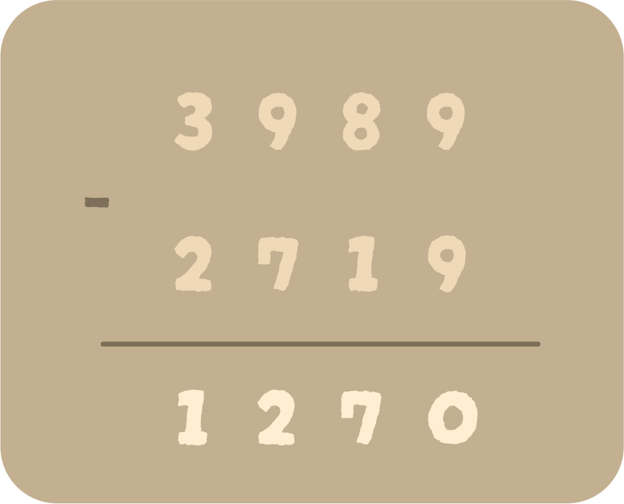
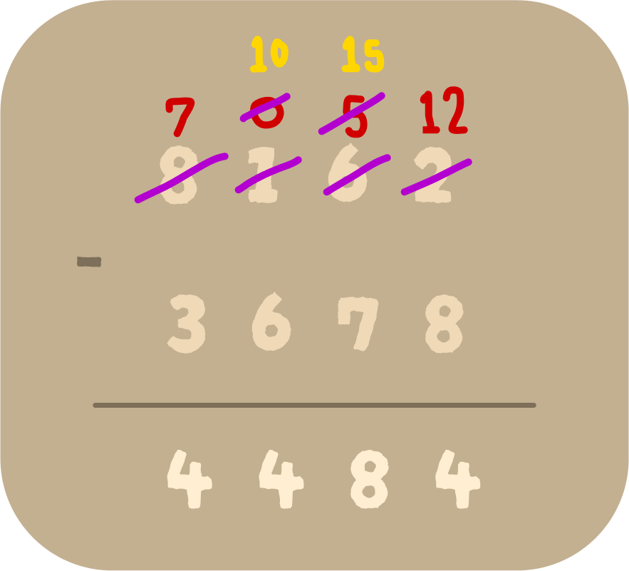

Substracting 4 Digits
Steps for 4-Digit Subtraction
⦁ Step 1: Write the numbers one underneath the other, with the minuend on top, and the subtrahend just below it.
⦁ Step 2: The numbers need to be placed as per their place values of ones, tens, hundreds, and thousands.
⦁ Step 3: Start subtracting the digits in the ones column, followed by the tens column, the hundreds column and the thousands column.
⦁ Step 4: Once the difference is obtained, the corresponding answer is written underneath. This gives the difference between the two numbers.
Stratigies to use in Substracting 4 Digits
1 - Digit Subtraction without (Regrouping):
Example: Subtract 2719 from 3989.
Solution: The 4-digit subtraction can be done using the following steps.
⦁ Step 1: Arrange the numbers according to their ⦁ place value one below the other.
⦁ Step 2: Start subtracting the digits in ones column. Since all the digits of the minuend are greater than the subtrahend, no regrouping/borrowing is required here. Subtract the numbers in ones column and write the difference. (9 - 9 = 0)
⦁ Step 3: Then, subtract the numbers in tens column and write the difference. (8 - 1 = 7).
⦁ Step 4: After this, subtract the numbers in the hundreds column and write the difference. (9 - 7 = 2).
⦁ Step 5: Now, subtract the numbers in the thousands column and write the difference. (3 - 2 = 1)
Therefore, the difference between the numbers is 1270.

2- 4 Digit Subtraction With Regrouping
Example: Subtract 3678 from 8162.
⦁ Step 1: Arrange the numbers according to their place value. Start subtracting the digits in ones column. We can see that 2 is smaller than 8. So, we will borrow 1 from the tens column which will make it 12. Now, 12 - 8 = 4.
⦁ Step 2: After giving 1 to the ones column in the previous step, 6 becomes 5. Now, let us subtract the digits in the tens place (5 - 7). Here, 5 is smaller than 7. So, we will borrow 1 from the hundreds column. This will make it 15. So, 15 - 7 = 8.
⦁ Step 3: In step 2 we had given 1 to the tens column, so we have 0 in hundreds place. Here, 0 is smaller than 6, so we will borrow 1 from the thousands column. This will make it 10. So, 10 - 6 = 4.
Therefore, the difference between the two given numbers is, 8162 - 3678 = 4484.
Important Notes on 4-Digit Subtraction:
⦁ Always remember to arrange the 4-digit number as per the place value of the digits.
⦁ In the case of regrouping/borrowing, as and when we borrow, we subtract the numbers simultaneously.
